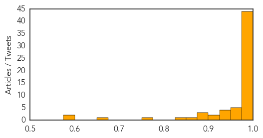
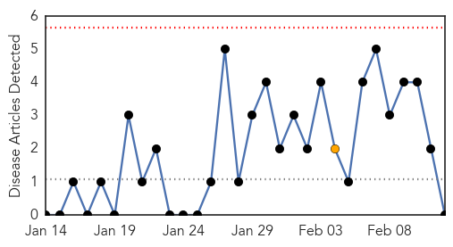

Swine Flu
30-Day Web Trend
18 alerts, 6 warnings

30-Day Twitter Trend
0 alerts, 0 warnings

Article Locations
Article Confidences
Top Articles:
- 1.000
- Swine flu in India: 216 deaths in 10 days, Guj and Raj most affected
- 1.000
- Swine flu death toll crosses 400, more than 5,000 infected
- 1.000
- Delay in treatment leads to swine flu deaths: study
- 1.000
- Are we losing the battle against H1N1?
- 1.000
- Shortage of syrup to treat H1N1 in children: Health minister
- 1.000
- WHO warning on flu ignored by state
- 1.000
- Bhopal woman dies of swine flu, death toll 7
- 0.999
- Swiss tourist dies of swine flu in India
- 0.999
- Swine flu in India: 108 deaths, 1075 positive cases in Gujarat this year
- 0.999
- 216 swine flu deaths registered..., SahilOnline News
- 0.999
- Swine Flu Claims 216 Lives in Feb: Govt Data
- 0.999
- Gujarat authorities step up measures to combat Swine Flu
- 0.999
- Swiss Tourist Dies of Swine Flu in India as Toll Mounts — Naharnet
- 0.999
- Swiss tourist dies of swine flu in India as toll mounts
- 0.999
- Swine flu cases cross 1,000, 6 deaths this season in city
- 0.999
- Swine flu scare: Second casualty in barely 96 hours
- 0.999
- Swiss tourist dies of swine flu in India as toll mounts - Kuwait Times
- 0.999
- Swiss tourist dies of swine flu in India as toll mounts
- 0.999
- Gujarat authorities step up measures to combat Swine Flu , AniNews.in
- 0.998
- Swine fllu in India: Total number of H1N1 cases - 5,157, number of deaths - 407 this year
- 0.998
- Congress party protests over spate in swine flu deaths in Madhya Pradesh
- 0.998
- As many as 44 H1N1 deaths occur in Madhya Pradesh, confirms govt
- 0.998
- Swine flu: Govt mulls tests for all in contact with the infected
- 0.998
- Swine flu claims eight more lives
- 0.997
- Swine flu claims Swiss tourist in India
- 0.996
- 2 Die of Swine Flu in Kolkata
- 0.996
- Spurt in H1N1 cases triggers panic among citizens
- 0.996
- Two die of swine flu in Kolkata
- 0.996
- Two die of swine flu in Kolkata
- 0.996
- Congress protests over rise in swine flu deaths in Madhya Pradesh , AniNews.in
- 0.995
- Swine flu claims two lives in Bengal
- 0.995
- Swine flu kills more than 400 people in India this year, double all of 2014
- 0.994
- Tourist dies of H1N1 flu, India toll passes 400
- 0.993
- CM reviews H1N1, jaundice situation
- 0.993
- Rajasthan declares swine flu epidemic
- 0.991
- H1N1 death toll reaches 14..., SahilOnline News
- 0.990
- Swiss tourist dies of swine flu
- 0.990
- 70 year old Swiss tourist dies of swine flu in India
- 0.990
- 70-year-old Swiss tourist dies of swine flu in India
- 0.988
- Swiss woman tourist dies of swine flu in Rajasthan
- 0.987
- Swiss woman among 8 who die of swine flu in Rajasthan
- 0.987
- ‘Proceed with caution while treating suspects’
- 0.985
- Swine flu claims life of Swiss tourist in India
- 0.983
- Swine flu cases surge to 53 in Lucknow
- 0.974
- Health Ministry holds review meeting on H1N1
- 0.973
- Swiss Tourist Dies of Swine Flu in Jodhpur
- 0.970
- Health Ministry Holds Review Meeting On H1N1
- 0.964
- Swine flu: Health officials blame MGM College admn
- 0.962
- Two deaths, three test positive for A(H1N1)
- 0.942
- Jaundice cases on the rise in Odisha: Official
Showing top 50 articles...
Top Tweets:
-
No tweets found for Feb 12, 2015
Pertussis
30-Day Web Trend
0 alerts, 1 warnings

30-Day Twitter Trend
0 alerts, 0 warnings

Article Locations

Article Confidences

Top Articles:
-
No articles found for Feb 12, 2015
Top Tweets:
-
No tweets found for Feb 12, 2015